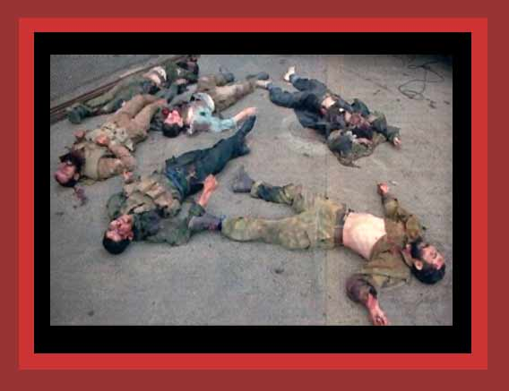

| Russia has been carrying on a civil war against Chechnya, which is fighting for the independence that its President declared in 1991. Tens of thousands have been killed, including many through democide on both sides. Here is shown some of those murdered by Russian forces. Source: unknown. |